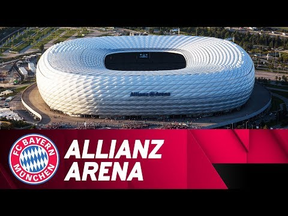

The giant of German football, with multiple national and international titles.
The history of Bayern Munich
1900 - Formation: Bayern Munich was founded on February 27, 1900, by 11 football players led by Franz John. The club initially competed in local leagues.
1932 -First German Championship: Bayern won their first national title in 1932, defeating Eintracht Frankfurt 2-0 in the final to claim the German championship.
1965 - Bundesliga Promotion: Bayern Munich was promoted to the Bundesliga in 1965. Although they joined late compared to other teams, they quickly became dominant.
1974-1976 - European Champions: Bayern won the European Cup (now known as the UEFA Champions League) three times consecutively, in 1974, 1975, and 1976, establishing themselves as one of Europe’s elite clubs.
1980s - Domestic Dominance: Throughout the 1980s, Bayern solidified their status as the best team in Germany, winning multiple Bundesliga titles and domestic cups.
2013 - Treble: In 2013, under coach Jupp Heynckes, Bayern won the treble: the Bundesliga, the DFB-Pokal (German Cup), and the UEFA Champions League, defeating Borussia Dortmund 2-1 in the final.
2020 - Second Treble: In 2020, Bayern Munich achieved their second treble, winning the Bundesliga, DFB-Pokal, and Champions League again, defeating Paris Saint-Germain 1-0 in the final under coach Hansi Flick.
All-Time Bundesliga Record: - All-Time Bundesliga Record: Bayern Munich has won over 30 Bundesliga titles, making them the most successful team in the history of German football.
For more information about the players, please click here